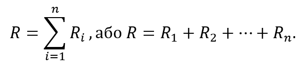
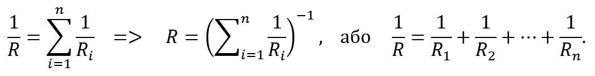
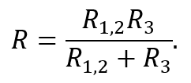
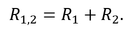
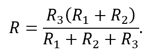

Способи збільшення та зменшення загального опору
Від способу з’єднання резисторів у колі залежить загальний опір усієї ділянки кола. Для отримання більших значень опору резистори з’єднують послідовно.

Рисунок 3.7.1
Загальний опір ділянки кола з послідовно з’єднаними резисторами (рис. 3.7.1) дорівнює сумі опорів усіх резисторів, з яких вона складається:


Рисунок 3.7.2
При послідовному з’єднанні резисторів їх загальний опір завжди більший за максимальний опір окремого резистора.
Загальний опір ділянки кола з паралельно з’єднаними резисторами (рис. 3.7.2) дорівнює:

При паралельному з’єднанні резисторів їх загальний опір завжди менший за мінімальний опір резисторів, з яких складається ділянка кола.

Рисунок 3.7.3
При змішаному з’єднанні резисторів схема може складатися з кількох підблоків послідовного та паралельного з’єднань. Для таких складних ланцюгів застосовується правило поетапного розрахунку: спочатку розраховується опір найменших підблоків, після чого – більших.
Наприклад, розрахунок загального опору змішаної схеми, зображеної на рис. 3.7.3, має вигляд:

Подана ділянка кола являє собою паралельне з’єднання двох підблоків: одного резистора R3 та послідовно з’єднаних резисторів R1 і R2. Для правильного розрахунку загального опору спочатку визначається опір ділянки послідовного з’єднання за відповідною формулою:

Після підстановки цього виразу формула для знаходження загального опору ділянки кола набуває вигляду:

Змішане з’єднання резисторів використовується для отримання специфічного еквівалентного опору, точного розподілу напруги і струму, а також при відсутності номіналу резистора з необхідним номіналом.